Plantilla / Socios

La plantilla del Caesar Baseball Club
A continuacion teneis todos los jugadores de nuestro club
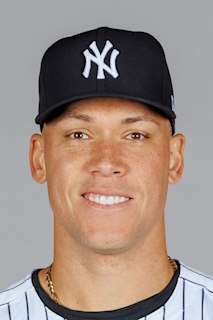
Aaron Judge
Edad actual: 32 años
Posición: Jardinero derecho
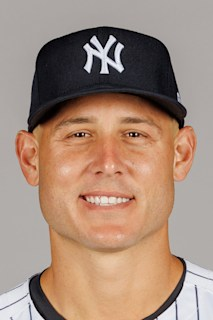
Anthony Rizzo
Edad actual: 35 años
Posición: Primera base
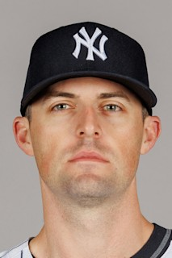
John "The Rocket" Rodríguez
Edad actual: 31 años
Posición: Lanzador
 DJ LeMahieu
DJ LeMahieu
Edad actual: 36 años
Posición: Segunda Base
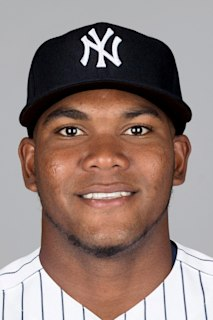
Franchy Cordero
Edad actual: 30 años
Posición: Jardinero
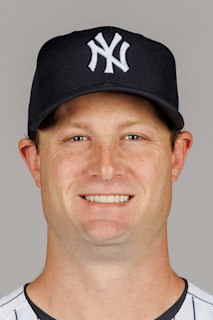
Gerrit Cole
Edad actual: 34 años
Posición: Lanzador
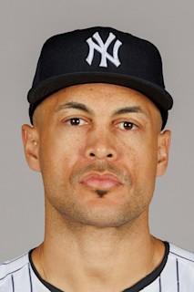
Giancarlo Stanton
Edad actual: 34 años
Posición: Jardinero derecho
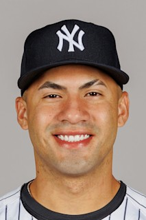
Gleyber Torres
Edad actual: 37 años
Posición: Tercera base
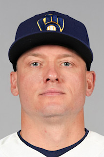
Josh Donaldson
Edad actual: 38 años
Posición: Cuarta base
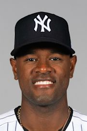
Luis Severino
Edad actual: 30 años
Posición: Lanzador
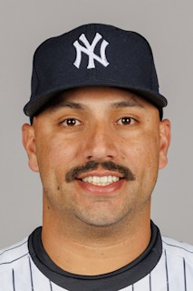
Néstor Cortés
Edad actual: 29 años
Posición: Lanzador
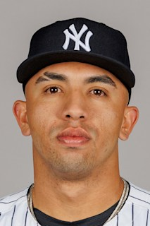
Oswald Peraza
Edad actual: 24 años
Posición: Jardinero